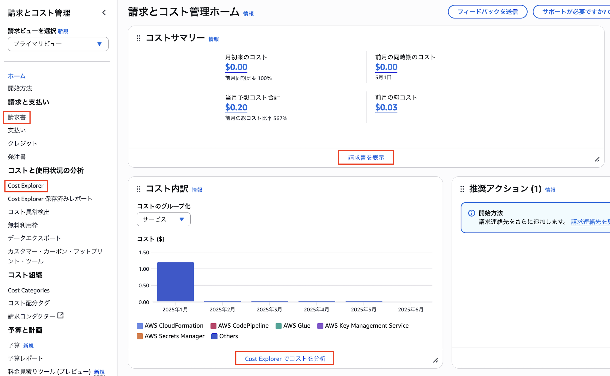

はじめに
このセッションで学べること
- AWSの基本構造と用語（リージョン、AZ、エッジロケーション など）
- クラウドインフラの利点と課題
- アカウント作成・セキュリティ設定（IAM, MFA, 課金確認など）
- VPC(仮想ネットワーク)の基本構成と作り方
- EC2インスタンス(仮想サーバー)の立ち上げとSSHによるリモート接続
- 最小限のネットワーク構成図を理解して自分で再現できるようにすること
ハンズオンでは、AWS上にシンプルなインフラ(VPC等)を構築し、EC2インスタンスの作成、SSH接続を行います。最終的には以下のような構成図になります。

1. AWSとは
1.1 AWSの概要
AWS（Amazon Web
Services）は、Amazonが提供する世界最大級のクラウドサービスプラットフォームです。サーバーやデータベース、ストレージ、ネットワークなど、ITインフラに必要なあらゆる機能を、インターネットを通じてオンデマンドで利用できます。
1.2 クラウドが普及する理由とその注意点
オンプレミスを使うより便利で安い場合が多いからというのがクラウドが普及する理由ですが、AWSはクラウドのメリットとして以下を述べています。
※オンプレミス - 物理的なサーバーを自社運用すること
クラウドコンピューティングの6つの利点（公式link）
- 初期費用が不要（従量課金）
サーバーやデータセンターに先に大きな投資をする必要がなく、使った分だけお金を払う「従量課金制」。使い始めるハードルが低くなります。
- スケールメリットによる低コスト
世界中の多くのユーザーとインフラを共有することで、AWSは大規模なスケールでコストを抑え、その分低価格なサービスを提供できます。
- キャパシティの事前見積もりが不要
利用者はリソースの数を事前に見積もる必要がなく、必要に応じてすぐに増減できます。これにより、無駄な設備投資や処理不足の心配がなくなります。
- スピードと俊敏性の向上
新しいサーバーやストレージを数分で立ち上げられるため、開発や検証のスピードが格段に上がり、アイデアをすばやく形にできます。
- 運用負担の軽減
物理的なサーバーやデータセンターの保守・運用から解放され、本来集中すべきプロジェクトやサービスの開発に時間を使えるようになります。
- グローバル展開が簡単
世界中の複数リージョンにアプリケーションを数クリックで展開可能。お客様に近い場所でサービスを提供でき、遅延を減らせます。
クラウドコンピューティングの注意点
こちらはGCP(Google Cloud
Platform)のページを参考にしたクラウドの注意点になります。これらのリスクは、プロバイダのサービスを正しく理解し、慎重に評価選定、運用することで、抑えることができます。
- インターネット接続に依存
クラウドはネット経由で利用するため、通信環境が悪いとアプリやデータにアクセスできなくなります。オフライン時の業務継続を考慮する必要があります。
- サービス停止のリスク（障害・災害など）
たとえ大手クラウドでも、自然災害や技術的トラブルにより、一時的にサービスが停止することがあります。重要なサービスは冗長化や多リージョン展開が推奨されます。
- ベンダーロックインの可能性
一度特定クラウドに依存した設計をすると、他のクラウドやオンプレミスへの移行が難しくなることがあります。ポータビリティを意識した設計が必要です。
- 自由に制御できない領域がある
物理インフラや一部のネットワーク設定など、クラウドでは利用者が直接制御できない範囲もあります。特定用途では柔軟性が制限される可能性もあります。
- セキュリティとプライバシーの懸念
クラウドのセキュリティにはユーザーの責任も含まれます。設定ミスによる情報漏洩や、不十分なアクセス制御がリスクとなるため、設計段階から対策が必須です。
- 予期せぬコストの発生
使った分だけ課金される仕組みは便利ですが、使いすぎると想定以上の請求が来ることも。リソースの自動停止やコストアラートなどで管理体制を整える必要があります。
1.3 責任共有モデル（公式link）
クラウドでは「セキュリティや運用のすべて」をユーザーがやるわけでも、AWSがすべてやってくれるわけでもありません。AWSでは「責任共有モデル」という考え方を採用しており、ユーザーとAWSがそれぞれ異なる範囲の責任を持つことが明確に定義されています。

AWSの一般的な責任共有モデル
AWS側のクラウドのセキュリティ責任
- データセンターの物理セキュリティ
- サーバー、ネットワーク、ストレージなどのインフラ管理
- 仮想化基盤やホストOSの運用・保守
→ この部分はAWSが責任をもって保護・管理するため、ユーザーはインフラを自分で構築・監視する必要がありません。
ユーザー側のクラウドにおけるセキュリティ責任
- OSやアプリの更新、セキュリティパッチの適用（例：EC2）
- データの暗号化、アクセス制御（IAM）
- S3バケットやセキュリティグループの設定
→ クラウドを安全に使うには、これらの設定をユーザー自身で正しく行う必要があります。
サービスによって責任範囲は変わる

サービス・タイプ別責任共有モデル（link）
たとえばEC2のようなIaaSの場合、OSやアプリケーションの管理もユーザーの責任です。逆に、S3やDynamoDBなどのマネージドサービスでは、OSやミドルウェアはAWSが管理してくれます。
つまり、使うサービスによって、自分がやるべき範囲が変わるという点に注意が必要です。
※IaaS - Infrastructure as a Serviceの略でイアースやアイアースと読む。仮想サーバーやストレージなどのインフラを提供するクラウドサービスを指す
メリットと注意点
- メリット：自分でインフラを管理しなくてよい分、運用負担を軽減できる
- 注意点：「AWSがやってくれるだろう」と思い込まず、自分の責任範囲をしっかり把握して設定・運用を行う必要がある
1.4 Well-Architected Framework（公式link）
AWSには安全かつ効率的にシステムを設計・運用するための指針として、Well-Architected
Frameworkがあります。これは推奨される設計・運用のベストプラクティスをまとめたもので、セキュリティやコスト、障害対策など、現場で直面しやすい課題に対応しやすくなり、クラウドを安全に活用する上で重要です。
6つの柱と設計原則
Well-Architected
Frameworkは、次の6つ柱から構成され、それぞれに複数の設計原則が定められています。以下で紹介しているのはほんの一部になります。公式ドキュメントは内容は充実しているのですが、なかなか読みづらいため色々なサイトを参照することをお薦めていたします。
1. 運用上の優秀性
- 小規模かつ可逆的な変更を頻繁に行う
- マネージドサービスを使用する
2. セキュリティ
- 最小権限の原則
- データ暗号化
- トレーサビリティを確保
3. 信頼性
- 自動復旧の設計
- 冗長構成とバックアップ
- フェイルオーバーの実装
4. パフォーマンス効率
- サーバーレスの活用
- スケーリングの自動化
- 最新技術の採用
5. コスト最適化
- 従量課金モデル
- 不要なリソースの削減
- 使用状況の可視化
6. 持続可能性
- 電力効率の良いサービス
- 環境に配慮した設計
- 継続的な最適化
1.5 AWSグローバルインフラストラクチャ（公式link）
AWSは世界中にデータセンターを展開しており、高可用性・低レイテンシ・災害対策を実現するために、グローバルで分散されたインフラを構築しています。ここでは主要な構成要素であるリージョン、アベイラビリティーゾーン、エッジロケーションについて紹介します。
🌍 リージョン
AWSのリージョンとは、地理的に分離された物理的なロケーションのことです。2025年時点で、世界に37のリージョンが存在し、日本には「東京リージョン」や「大阪リージョン」、アメリカには「バージニアリージョン」などがあります。各リージョンには、最低でも3つ以上のアベイラビリティーゾーン（AZ）が含まれています。
AWS グローバルインフラストラクチャマップ（2025年6月現在）
🏢 アベイラビリティーゾーン（AZ）
アベイラビリティーゾーン（AZ）は、独立したデータセンター群(1つ以上のデータセンターで構成)のことであり、1つのリージョンに最低3つ以上のAZが存在します。たとえば、東京リージョンには「ap-northeast-1a」「ap-northeast-1c」「ap-northeast-1d」などのAZが存在します。

リージョンとAZのイメージ
各AZは、個別の電力供給、ネットワーク設備、冷却システムを持ち、高帯域かつ低レイテンシーの専用ネットワークで相互接続されています。こうした特徴から、複数のAZを組み合わせることで高可用性・耐障害性・拡張性を実現するシステム構成が可能です。たとえば、アプリケーションを複数のAZに分散し冗長性を持たせることで、停電・落雷・地震などで1つのAZに障害が発生しても、安全にサービスを継続できます。
※可用性（Availability）- システムが継続して稼働できる度合いや能力のこと
AZ同士は数キロ〜100km以内の物理的に意味のある距離で分離されています。
📍 エッジロケーション（Edge Location）
エッジロケーションは、CloudFrontなどのCDNで使用されるキャッシュ配信ポイントです。
世界700以上の都市に設置されており、ユーザーに最も近い場所からコンテンツを配信することで、表示速度を大幅に改善できます。
たとえばアメリカのユーザーが東京リージョンのサイトにアクセスした場合でも、アメリカ国内のエッジロケーションにあるキャッシュを取得することで、高速にページを表示できます。
キャッシュとは
2. AWSアカウント作成とセキュリティ設定
2.1 AWSアカウント開設
公式サイトのAWS
アカウント作成の流れを開きます。
ページ内の作成の流れ(ステップ1~5)を確認し、「今すぐ無料サインアップ」からアカウント作成を進めます。作成の流れは確認しながら進めることができます。
パスワードは忘れないようお気をつけください。難しいところはないと思いますが、ステップ2の連絡先情報の入力は決まったフォーマットがある為、下の図を参考にしてみてください。
またステップ5は無料のベーシックサポートを選択します。
ステップ2の参考画面 フォーマットに注意する必要があります
無事に作成ができ、以下の画面が出たら、「AWSマネジメントコンソールにお進みください」をクリックしましょう。

自動的にルートユーザーとしてサインインした状態でAWSマネジメントコンソールに遷移します。

ルートユーザーとIAMユーザーの使い分け
現在はルートユーザーにサインインしている状態です。
ルートユーザーはAWSアカウントを作成したときに設定したメールアドレスとパスワードでサインインすることができます。
ルートユーザーはアカウントの所有者であり、すべてのAWSサービスに対する完全なアクセス権限を持っています。そのため、セキュリティ上の理由から、日常的な操作ではなく、特別な操作を行うときのみ使用することが推奨されます。
後ほどIAMユーザーというものを作成し、それ以降はルートユーザーの代わりにIAMユーザーを使用します。
サインイン画面:
ルートユーザーとIAMユーザーどちらを使用するか選ぶことができます
マネジメントコンソールのリージョン注意点
左上のリージョンの表示が「アジアパシフィック(東京)」か確認してください。まれに画面遷移をしていると、バージニア北部など違うリージョン設定になる場合があるため注意してください。気づいたら東京リージョンに変更しましょう。

表示がグローバルとなることがありますが、こちらは問題ありません。リージョン単位ではないAWSのサービスはグローバルの表示になります。

AWS課金額の確認方法
①請求とコスト管理
マネジメントコンソール右上の検索窓にbillingと入力し、「Billing and Cost Management」を選択します。
請求とコスト管理ホームが表示され、請求額の確認ができます。アカウントを作成した直後は以下のようにデータ利用不可と表示されます。
より詳しい内容は「請求書」または「Cost Explorer」から確認できます。

②請求書
月ごとの請求内容を印刷からPDFでダウンロードできます。サービス別料金の確認もできます。
③Cost Explorer
月ごとの利用料金やサービス別の課金状況がグラフで確認できます。右側のパラメータを使い表示内容を設定できます。

予算(Budgets)を使用し、意図せぬ課金時にメール通知を設定
「請求とコスト管理」から「予算」を選択します。
予算を作成を選択し、下の図を参考に設定を進めます。
上記で設定すると、予算額に対して以下の３つのパターンの通知が設定されます。
予算額が$10の場合
1) 実際の支出が 85% ($8.5)に達したとき
2) 実際の支出が 100% ($10)に達したとき
3) 予測される支出が 100% ($10)に達すると想定されるとき
さらに、作成した予算を編集することで、しきい値の変更や新しいアラートの追加が可能です。
下の動画では実際の支出を85%から20%($2)に変え、さらに実際の支出が50%($5)のアラートも追加しています。
IAM ユーザーおよびロールによる請求情報へのアクセス
現在の状態ではルートユーザーからしか請求情報を見ることができません。それでは不便なため、このあと作成するIAMユーザーでも請求情報を見られるように設定を変更します。
マネジメントコンソール画面左上のユーザー名をクリックし、メニューから「アカウント」を選択します。
アカウント画面を半分以上スクロールダウンし、「IAMユーザーおよびロールによる請求情報へのアクセス」のセクションを探し、編集を押します。
IAMアクセスをアクティブ化をチェックし更新を押します。
 有効化済みになることを確認します。
有効化済みになることを確認します。

IAMユーザーの作成
「IAM」サービスから新しいユーザーを作成し、管理者権限（AdministratorAccess）を付与します。
マネジメントコンソールの検索窓にiamと入力し、IAMサービスを選択します。
IAMサービスの画面が表示されます。左側のメニューから「ユーザー」を選択します。
 「ユーザーを作成」を押します。
「ユーザーを作成」を押します。
ユーザー名を入力し、「AWSマネジメントコンソールへのユーザーアクセスを提供する」にチェック、「IAMユーザーを作成します」を選択、カスタムパスワードを選択し任意のパスワードを入力、次へを押します。
パスワードは忘れないようにしてください。
 許可を設定で「ポリシーを直接アタッチする」を選択し、許可ポリシーから「AdministratorAccess」を選択し、スクロールダウンして次へを押します。
許可を設定で「ポリシーを直接アタッチする」を選択し、許可ポリシーから「AdministratorAccess」を選択し、スクロールダウンして次へを押します。
 ※ポリシーはJSONで書かれています。ポリシーなどのIAMは次回学習します
※ポリシーはJSONで書かれています。ポリシーなどのIAMは次回学習します
 確認画面が表示されるので、内容を確認し、問題なければ「ユーザーの作成」を押します。
確認画面が表示されるので、内容を確認し、問題なければ「ユーザーの作成」を押します。
 ユーザーの作成が完了すると、以下のような画面が表示されます。ユーザーリストに戻るをクリックして戻りましょう。
ユーザーの作成が完了すると、以下のような画面が表示されます。ユーザーリストに戻るをクリックして戻りましょう。

MFA認証の設定
セキュリティのため、ルートユーザーとIAMユーザー両方に必ず多要素認証（MFA）を設定してください。
ルートユーザーから設定します。画面左上のアカウント名をクリックし、メニューから「セキュリティ認証情報」を選択します。
「多要素認証（MFA）」セクションの「MFAデバイスの割り当て」をクリックします。
MFAデバイスを選択します。デバイス名は任意のものを指定できます。
「パスキーまたはセキュリティキー」がセキュアで操作も簡潔で優れています。
(生体認証やPINを使用したiCloud キーチェーン、Google パスワードマネージャー、Windows Helloなどが使用可)
認証アプリケーションは、Google AuthenticatorやMicrosoft Authenticatorなどのアプリが利用できます。
選択後は「次へ」を押して、画面の指示に沿って設定をお願いします。

可能であれば、複数のMFAデバイスを設定してください(公式で推奨されています)。MFAデバイス紛失時などサポートに連絡することなく、予備のMFAデバイスを使用しアカウントへサインインでき、ルートユーザーのパスワード変更ができます。
ルートユーザーのMFAが設定し終わりましたら、IAMユーザーにも同様にMFAを設定していきます。
IAMの左メニューから「ユーザー」を選択し、先ほど作成したIAMユーザーを選択します。
「セキュリティ認証情報」タブを選択し、「MFAデバイスの割り当て」を押します。以降は先ほどと同じ手順でMFAを設定します。

エイリアスの設定
エイリアスはアカウントIDの代わりに使用できる名前です。必須ではないですが、サインイン時に利用でき、覚えやすく便利です。
IAMダッシュボード左側にエイリアス作成ボタンがあります。名前は自由に設定できますが、他のユーザーが既に利用しているものは使えません。
IAMユーザーでサインイン
ここまでルートユーザーにサインインしていましたが、今後はIAMユーザーを使用し学習します。
画面左上のメニューから、アカウントIDまたはエイリアスをコピーしておきましょう、サインイン時に必要になります。
コピーしたらルートユーザーからサインアウトします。
 画面遷移後に、「もう一度ログインする」、「またはコンソールにサインイン」を押します。
画面遷移後に、「もう一度ログインする」、「またはコンソールにサインイン」を押します。
下のどちらかのサインイン画面が出ますが、一つ目の場合IAMユーザーを選択し、アカウントIDまたはエイリアスを入力し次へを押します。
二つ目の場合アカウントIDまたはエイリアス、IAMユーザー名、パスワードを入力しサインインします。
MFA認証を済ませると、IAMユーザーとしてマネジメントコンソールにサインインできます。

3. VPCの概要と構成要素
AWSではEC2などの仮想サーバーを立ち上げる際、自分でインフラを作る必要があります。
VPC、サブネット、インターネットゲートウェイ、ルートテーブル、セキュリティーグループなどたくさんの用語が出てきます。あとのハンズオンで使う為、この5つは理解しましょう。
1. VPCとは？
Amazon VPC（Amazon Virtual Private
Cloud）は、AWS上に構築する自分専用の仮想ネットワーク空間です。企業ネットワークのように、サブネット、ルート、セキュリティなどを自由に設計できます。

VPCイメージ：VPCのみ作成した状態ではインターネットとは接続しておらず、VPC内は完全にプライベートな状態です
VPCのIPアドレスの範囲は、CIDR(Classless Inter-Domain Routing)を使用し設定します。
CIDRとは？
10.0.0.0/24のような形式で、IPアドレスとサブネットマスクを組み合わせた表記法です。
まずIPアドレス(IPv4)について理解しましょう。
10.0.0.0や192.0.2.1のような形式のネットワーク上のデバイスを識別するための一意の番号です。
IPv4は32ビットです。４バイト(8ビット×4)ですね。そのため00001010.00000000.00000000.00000000のように8ビットを4つに分けて表記できます。
ただ見づらいため、00001010.00000000.00000000.00000000なら、各8ビットを10進数にし、10.0.0.0のように通常は書きます。
ちなみにIPv4の数は、2の32乗で計算でき、約42億個あります。人口に比べて少ないため枯渇が叫ばれています。
10.0.0.0/24のように「/」の後に数字が続く場合、これはサブネットマスクを表します。
以下のCIDR(Classless Inter-Domain Routing)範囲内から任意のCIDRを指定します(/16〜/28のCIDRブロックを使用)。仮想であるため、0.0.0.0から255.255.255.255まで全ての範囲のプライベートIP(約40億個)を設定可能ですが、グローバルIPと重複する範囲の設定は推奨されません。
| 範囲 |
実際のIPアドレス範囲 |
利用可能IPアドレス数（理論値） |
10.0.0.0/8 |
10.0.0.0 ～ 10.255.255.255
|
16,777,216 個（約1,670万） |
172.16.0.0/12
|
172.16.0.0 ～ 172.31.255.255
|
1,048,576 個（約104万） |
192.168.0.0/16
|
192.168.0.0 ～ 192.168.255.255
|
65,536 個（約6.5万） |
あとのVPC作成のハンズオンでは「10.0.0.0/16」を指定します。
2. ネットワーク構成の基本
🧱 サブネット（Subnet）
VPC内のネットワークを小さく分割したものサブネットです。EC2などのリソースはVPCに直接はおけず、サブネットの中に作成します。
サブネットの図を挿入
サブネットにもCIDRを割り当てます。例えば「10.0.1.0/24」や「10.0.2.0/24」など、VPC全体のCIDR内で範囲を区切ります。
上記図の状態ではまだインターネットとサブネットはつながっていません。プライベートサブネットと呼ばれます。
ではどうしたらインターネットとの通信ができるのでしょうか？必要なものがあります。
🌐 インターネットゲートウェイ（IGW）
VPC図を挿入
VPCをインターネットに接続するための出入口。VPCにアタッチします。
これでサブネットはインターネットに接続可能になりますか？まだです、出入り口をつけただけではサブネットはインターネットに接続できません。
🛣 ルートテーブル（Route Table）
通信経路を定義する設定。各サブネットにアタッチし、宛先CIDRとターゲット（IGW/NATなど）を指定します。
ルートテーブルの図を挿入
ルートテーブルでIGWを経由するルート（例：0.0.0.0/0 → IGW）を設定することで、サブネットがパブリックになります
その設定のないものはプライベートなままです。
- パブリックサブネット：インターネットとの通信が可能なサーバー向け（例：Webサーバー）
- プライベートサブネット：外部アクセス不可。内部処理向け（例：DB）
🔁 NAT Gateway
プライベートサブネットのインスタンスが外部通信するためのゲートウェイ。外部からのアクセスは不可です。
3. セキュリティとIP管理
🔐 セキュリティグループ（SG）
EC2などに適用する仮想ファイアウォール。インバウンド/アウトバウンドで許可ルールのみ設定し、返答通信は自動的に許可されます（ステートフル）。
📜 ネットワークACL（NACL）
サブネット単位のアクセス制御。許可・拒否の両ルールを設定します（ステートレス）。
🧠 SGとNACLの違い
| 項目 |
セキュリティグループ |
ネットワークACL |
| 適用単位 |
EC2インスタンス |
サブネット |
| 通信の状態 |
ステートフル |
ステートレス |
| 許可・拒否 |
許可のみ |
許可・拒否両方 |
🧩 Elastic IP（EIP）
EC2インスタンスなどに割り当て可能な固定グローバルIP。再起動時でもIPが変わらないため、外部公開用途に便利です。
📶 ENI（Elastic Network Interface）
EC2にアタッチできる仮想ネットワークカード。IPアドレスやセキュリティグループの設定を柔軟に扱えます。
4. 可用性と拡張性
🏢 アベイラビリティゾーン（AZ）
リージョン内の物理的に分離されたデータセンター群。AZ単位でサブネットを配置することで、冗長構成と高可用性を実現できます。
🌉 マルチVPCと接続
VPCを用途や部門ごとに分け、VPCピアリングやTransit Gatewayで接続することで、大規模なネットワーク設計が可能です。
4. VPCハンズオン
このハンズオンでは、EC2インスタンスを配置するための最小構成のVPCを作成します。パブリックサブネットを1つ持ち、インターネット接続が可能な構成を用意します。
構成概要
- VPC（10.0.0.0/16）
- パブリックサブネット（10.0.1.0/24）
- インターネットゲートウェイ
- ルートテーブル（0.0.0.0/0 → IGW）
- セキュリティグループ（SSH: 22番ポートを自分のIPから許可）
手順
- VPCを作成（10.0.0.0/16）
- サブネットを作成（10.0.1.0/24、パブリック）
- インターネットゲートウェイ（IGW）を作成してVPCにアタッチ
- ルートテーブルを作成し、0.0.0.0/0 に IGW を設定
- ルートテーブルをサブネットに関連付け
- サブネットの「自動割り当てパブリックIP」を有効にする
- セキュリティグループを作成し、SSH(22)を許可
この構成で、次のEC2ハンズオンでパブリックIPからSSH接続が可能になります。
5. EC2とは？
仮想サーバーとは
物理的なサーバーを仮想的に分割し、複数の利用者がそれぞれ独立した環境として利用できるようにしたものです。AWSではEC2というサービスで仮想サーバーを提供しています。
ハイパーバイザーとは
仮想化を実現するソフトウェアのことです。物理マシンの上で複数の仮想マシンを動かす仕組みを提供し、AWSではXenやNitroといった技術が使われています。
AMI（Amazon Machine Image）
EC2インスタンスを起動するための「OSとソフトウェアのセット」です。UbuntuやAmazon Linuxなど、用途に応じたAMIを選んでサーバーを立ち上げます。
インスタンスタイプ
仮想サーバーのスペックを表します。CPU・メモリ・ネットワーク帯域などに応じて様々なタイプ（例：t3.micro, m5.largeなど）があります。
EBS（Elastic Block Store）
EC2にアタッチする仮想ハードディスクです。インスタンスのストレージとしてOSやデータを保存します。停止してもデータが保持されます。
キーペア
SSH接続のための公開鍵と秘密鍵のセットです。インスタンス作成時に登録し、秘密鍵（.pemファイル）を使って安全にリモート接続します。
6. EC2ハンズオン
このハンズオンでは、VPC上にEC2インスタンスを作成し、SSH接続を行って "hello world" を表示するまでの手順を体験します。
前提
- VPCとパブリックサブネットが作成済み
- インターネットゲートウェイが設定済み
- キーペア（.pemファイル）を事前に作成しておく
✅ キーペアの作成方法（AWSマネジメントコンソール）
- AWSマネジメントコンソールにログイン
- サービスメニューから「EC2」を選択
- 左メニューで「キーペア」をクリック
- 「キーペアを作成」を押す
-
下記の項目を入力または選択：
- キーペア名（例：
my-key）
- キーペアの種類：RSA（推奨）
- プライベートキーフォーマット：
.pem（Mac / Linux）または
.ppk（Windows用PuTTY）
- 「キーペアを作成」を押すと、秘密鍵ファイル（
.pem）が自動的にダウンロードされる
⚠️ ダウンロードした .pem ファイルは後から再取得できないので、大切に保管してください！
手順
- EC2ダッシュボードに移動し「インスタンスを起動」
- AMIの選択：Amazon Linux 2を選択
- インスタンスタイプ：無料枠の
t2.micro または t3.micro を選択
- キーペアの選択：作成済みのキーペアを選ぶ
- ネットワーク設定：作成したVPCとパブリックサブネットを選択
- 「自動割り当てパブリックIPを有効化」
- セキュリティグループ：SSH (ポート22) を自分のIPに制限して許可
- インスタンスを起動
SSH接続
- インスタンスの「パブリックIPv4アドレス」を確認
- ターミナルで以下のコマンドを実行（pemファイルのパスは適宜変更）
chmod 400 my-key.pem
ssh -i my-key.pem ec2-user@<インスタンスのパブリックIP>
"hello world" を表示
- ログイン後、以下のコマンドを実行
echo "hello world"
これでEC2ハンズオンは完了です！仮想サーバーへの接続体験ができました 🎉